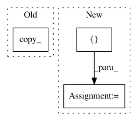

5ffa38fca42bb3fbee030f4b80264e0f4910a49c,torch_geometric/datasets/utils/tu_format.py,,read_adj,#Any#Any#,15
Before Change
def read_adj(dir, prefix):
index = read_file(dir, prefix, "A")
index = index.t().long() - 1
new_index = index.new(index.size()).copy_(index)
indicator = read_file(dir, prefix, "graph_indicator").long() - 1
bincount = torch.from_numpy(np.bincount(indicator.numpy()))
After Change
row, col = index
row, perm = row.sort()
col = col[perm]
index = torch.stack([row, col], dim=0)
indicator = read_file(dir, prefix, "graph_indicator").long() - 1
index_slice = index.new(indicator.max() + 2)
index_slice[0] = 0
index_slice[-1] = index.size(1)
curr_graph = indicator[0]
for i in range(index.size(1)):
row = index[0, i]
if indicator[row] > curr_graph:
index[:, index_slice[curr_graph]:i] -= index[:, index_slice[curr_graph]:i].min()
curr_graph += 1
index_slice[curr_graph] = i
index[:, index_slice[curr_graph]:] -= index[:, index_slice[curr_graph]:].min()
return index, index_slice
def read_slice(dir, prefix):
In pattern: SUPERPATTERN
Frequency: 3
Non-data size: 3
Instances
Project Name: rusty1s/pytorch_geometric
Commit Name: 5ffa38fca42bb3fbee030f4b80264e0f4910a49c
Time: 2018-01-16
Author: matthias.fey@tu-dortmund.de
File Name: torch_geometric/datasets/utils/tu_format.py
Class Name:
Method Name: read_adj
Project Name: cornellius-gp/gpytorch
Commit Name: edb217e131d292dda89c989ce20b9e9f705a7ada
Time: 2017-09-09
Author: gpleiss@gmail.com
File Name: gpytorch/module.py
Class Name: Module
Method Name: set_bounds
Project Name: cornellius-gp/gpytorch
Commit Name: 1e96334c79060b60c51c7d3b85bea7048d8e1ad2
Time: 2019-09-29
Author: kaw293@cornell.edu
File Name: test/kernels/test_grid_kernel.py
Class Name:
Method Name: